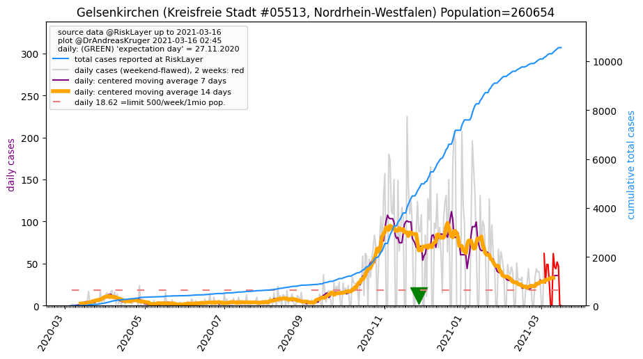
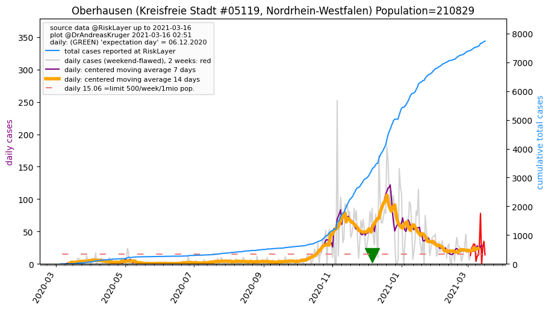
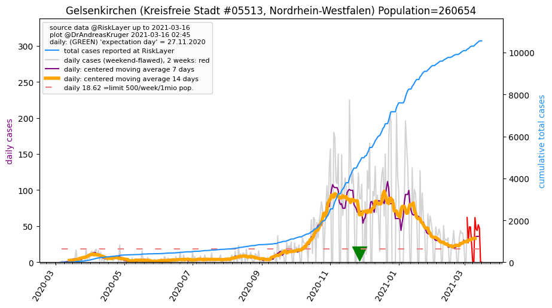
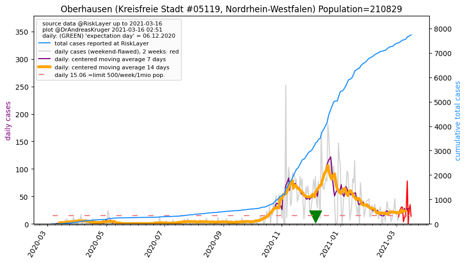

")
")
")
")
")
")
")
")

")
")
")
")

")
")
")
")
")
")
")
")
")
")
| Coesfeld_KR (0.0 km) |
Münster_KS (20.2 km) |
Recklinghausen_KR (25.9 km) |
Borken_KR (33.8 km) |
Unna_KR (37.1 km) |
| Herne_KS (38.2 km) |
Hamm_KS (38.7 km) |
Dortmund_KS (39.7 km) |
Gelsenkirchen_KS (40.3 km)  |
Warendorf_KR (40.8 km) |
| Steinfurt_KR (41.1 km) |
Bottrop_KS (45.0 km) |
Bochum_KS (45.2 km) |
Oberhausen_KS (53.3 km)  |
Essen_KS (53.9 km) |
| Ennepe-Ruhr-Kreis_KR (57.9 km) |
Wesel_KR (58.1 km) |
Hagen_KS (58.4 km) |
Mülheim an der Ruhr_KS (60.7 km) |
Duisburg_KS (64.6 km) |
| Osnabrück_KS (65.3 km) |
Soest_KR (67.8 km) |
Gütersloh_KR (68.2 km) |
Wuppertal_KS (69.9 km) |
Beware that this is a temporary and experimental page - it might get removed, so please do not link to it. Instead link to project http://tiny.cc/cov19de.